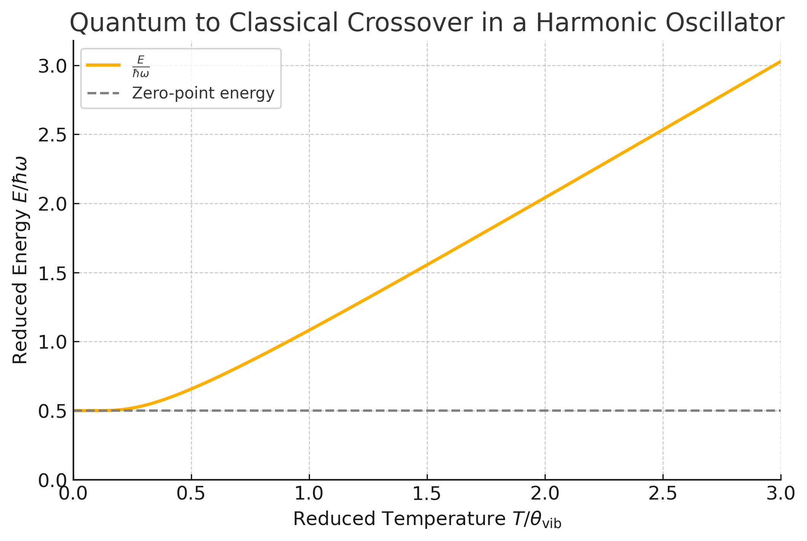
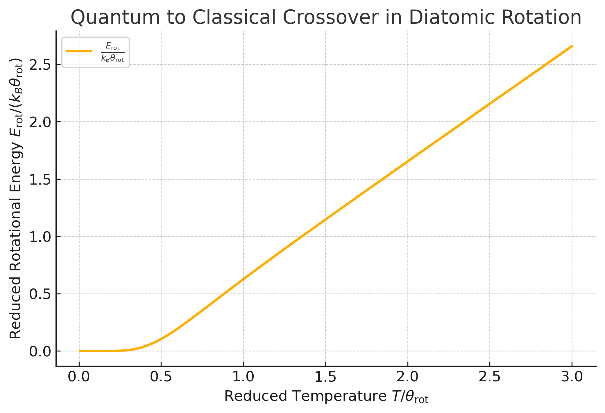

When does quantum mechanics make a difference?#
Following Kardar 6.1 and 6.2, we motivate quantum statistical mechanics by looking at examples where classical statistical mechanics gives the wrong answer, or even diverges. These examples will also help us see how the quantum results reduce to the classical ones in the appropriate high-temperature limit.
Fluctuations of a Hydrogen atom#
Consider the classical Hamiltonian for a hydrogen atom:
We would like to determine the partition function \(Z(T)\), the free energy \(F(T)\), the internal energy \(E(T)\), and related thermodynamic quantities.
It is convenient to transform to center-of-mass and relative coordinates. Define the center-of-mass coordinate
with conjugate momentum \(\vec{P}\), and the relative coordinate
with conjugate momentum \(\vec{p}\). The Hamiltonian then separates as
where \(M = m_e + m_p\) is the total mass and \(\mu = \frac{m_e m_p}{m_e + m_p}\) is the reduced mass.
Because the center-of-mass and relative motions decouple, the partition function factorizes as \(Z = Z_{\mathrm{cm}} Z_{r}\). For the relative motion we obtain
where the thermal de Broglie wavelength is defined as:
Here classical mechanics immediately runs into trouble: the integral in (29) diverges because the Coulomb attraction makes
Quantum mechanics addresses this problem through Heisenberg’s uncertainty principle:
This prevents the electron from collapsing arbitrarily close to the proton and leads instead to a discrete spectrum of bound states:
So, instead of the classical phase-space expression
we use the quantum partition function
This quantum expression removes the short-distance divergence of the classical Coulomb problem. For hydrogen, however, one must be slightly careful: the Coulomb potential also has infinitely many highly excited bound states that accumulate near the ionization threshold, so the naive sum over all states is not strictly finite in the idealized infinite-volume problem. In practice this is regularized by finite volume, screening, collisions, or ionization, and under ordinary laboratory conditions these very highly excited states are usually irrelevant.
In the examples below, we will see explicitly how the quantum result crosses over to the classical one in the high-temperature limit \(T \to \infty\). Later, we will derive (30) from the general formalism of quantum statistical mechanics.
The sum in (30) runs over all quantum states \(\alpha\). These play the role of microstates in the quantum theory.
For hydrogen, the characteristic electronic excitation scale is set by the Rydberg,
This is an extremely high temperature scale, so under ordinary laboratory conditions thermal occupation of highly excited electronic states is usually negligible. For that reason, hydrogen is not the best example for understanding how thermal energy gradually activates additional internal degrees of freedom. To see that effect more clearly, it is better to move on to molecules, whose rotational and vibrational energy scales are much smaller and often lie in the experimentally accessible thermal range.
Dilute Polyatomic Gases#
Now consider a dilute gas of tightly bound molecules. For each molecule, the internal Hamiltonian can be written as
where \(n\) is the number of atoms in a molecule. For simplicity, we write the Hamiltonian as though all particles had the same mass \(m\). This is no real restriction, since for particles with masses \(m_i\) we can rescale
which makes the kinetic term take the same form while leaving the phase-space volume element \(dq \cdot dp\) unchanged.
The single-molecule partition function is
For \(N\) such molecules, neglecting intermolecular interactions,
There is no extra factor of \(1/n!\) unless the atoms within a molecule are identical and being treated as indistinguishable.
The relevant scale here is the interatomic binding energy that holds the molecule together. At temperatures of order \(T \sim 10^3\,\mathrm{K}\), the thermal energy is only
which is still small enough that the molecule remains bound and fluctuates only weakly around a stable equilibrium configuration \(q_i^*\). Writing
and expanding the potential to quadratic order gives
where \(V^* = V({q_i^*})\), and the linear term vanishes because we expand about an equilibrium point. The Hessian is symmetric and positive semidefinite, so it can be diagonalized:
with \(O\) orthogonal. In the normal-mode coordinates
the partition function becomes
This separates into a product of Gaussian integrals. Using
and integrating over the momenta, we find
The internal energy is then
which is just the classical equipartition result: each quadratic term contributes \(\frac{1}{2}k_B T\).
If some \(K_s=0\), then the corresponding mode has no restoring force. Such a mode contributes no \(\beta\)-dependence from the potential term, and therefore changes the energy counting. If \(m\) is the number of nonzero modes, then
The number of zero modes is \(r = 3n - m\). These are determined by symmetry and typically correspond to 3 translations together with 0 to 3 rotations, depending on the molecule.
Hence the heat capacity per molecule is
Classically this predicts a temperature-independent specific heat.
Experimentally, this is not what happens. At low temperatures many degrees of freedom are frozen out by quantization, and \(C_v\) increases only gradually as translational, rotational, and vibrational modes become thermally accessible.

For \(\mathrm{H}_2\), a diatomic molecule, we have \(n=2\) and \(r=5\): 3 translational zero modes and 2 rotational ones.
The classical prediction is therefore
But the measured behavior depends strongly on temperature:
As \(T \to 0\), \(C_V \sim \frac{3}{2} k_B\), with only center-of-mass translation contributing.
Around \(T \sim 500\,\mathrm{K}\), \(C_V \sim \frac{5}{2} k_B\), as rotational modes begin to contribute.
At \(T \gg 1000\,\mathrm{K}\), \(C_V \sim \frac{7}{2} k_B\), once the vibrational mode also becomes thermally active.
The classical result is recovered only when the thermal energy is large compared with the relevant level spacings. At intermediate temperatures, some modes remain frozen out while others have already equilibrated.
Vibrational Modes#
A diatomic molecule has
vibrational mode with \(K_s > 0\), corresponding to oscillations of the bond length.
Let \(q = x - x_0\) denote the deviation of the bond length from equilibrium. The vibrational Hamiltonian is then
where \(\omega = \sqrt{K_s / m}\) is the classical vibrational frequency.
Classically, the partition function is
The corresponding internal energy is
as expected for two quadratic degrees of freedom.
Quantum mechanically, the energy eigenvalues are
and the partition function is
In the high-temperature limit, \(\beta \to 0\), this reduces to the classical result:
Notice that this matching requires the conventional factor \(\int \frac{dq\,dp}{h}\) in the classical phase-space integral. Although this factor does not affect classical equations of motion, it is exactly what the semiclassical correspondence demands.
Note
Quantum states and phase space volume
Semiclassically, each quantum state occupies a phase-space area of \(2 \pi \hbar\). This follows from the Bohr-Sommerfeld quantization condition
where \(n\) is an integer.
Using Stokes’ theorem, the same quantity can be written as
which is the phase-space area enclosed by the orbit. This idea underlies the Weyl formula and, more broadly, semiclassical trace formulas.
From
the internal energy is
It is convenient to introduce the vibrational temperature
and plot the reduced energy \(E/\hbar\omega\) as a function of \(T/\theta_\text{vib}\).
{kind=link}

Fig. 1 Plot of the reduced energy \(\frac{E}{\hbar \omega}\) as a function of the reduced temperature \(T / \theta_\text{vib}\). The energy approaches \(\frac{1}{2}\) at low temperatures and increases linearly with \(T / \theta_\text{vib}\) at high temperatures, reflecting the transition from quantum to classical behavior.#
At low temperatures (\(T / \theta_\text{vib} \ll 1\)), the energy approaches the zero-point value \(\hbar\omega/2\). At high temperatures (\(T / \theta_\text{vib} \gg 1\)), it approaches the classical result \(k_B T\).
Note
As \(T \to 0\),
so the heat capacity is exponentially small. This is a general feature of any system with an energy gap \(\Delta E = \hbar \omega\) above the ground state.
Rotations#

The orientation of a diatomic molecule is specified by the angles \(\theta\) and \(\phi\), which parameterize a point on the sphere \(S^2\). The Lagrangian is
where \(I\) is the moment of inertia. The conjugate momenta are given by:
The Hamiltonian is therefore
where \(\vec{L}\) is the angular momentum. This is the same Hamiltonian as that of a particle constrained to move on the surface of a sphere.
Classically, the partition function is
Thus
so the energy and heat capacity are
This is the equipartition result for two quadratic degrees of freedom.
Quantum mechanically, the Hamiltonian is still
but now \(\vec{L}\) is an operator, and its components do not commute:
The eigenfunctions are the spherical harmonics \(\psi(\theta, \phi) = Y_{l,m}(\theta, \phi)\), with
The rotational partition function is therefore
In the high-temperature limit (\(T \to \infty\), \(\beta \to 0\)), the sum over \(l\) can be approximated by an integral:
which recovers the classical result up to convention-dependent numerical factors in the definition of \(\theta_r\).
At low temperatures, only the \(l=0\) and \(l=1\) states matter, so
and the rotational contribution to the specific heat becomes exponentially small. The energy is approximately
while the heat capacity is
{kind=link}

Fig. 2 Plot of the reduced rotational energy \(E_{rot} / k_B \theta_r\) as a function of the reduced temperature \(T / \theta_r\). The energy approaches zero at low temperatures due to quantum effects and increases linearly with \(T / \theta_r\) at high temperatures, reflecting the transition to classical behavior.#
Note
Why is there no zero-point rotational energy?
In quantum mechanics, zero-point energy arises when a system is confined by a potential, such as in a harmonic oscillator. The uncertainty principle prevents the particle from being completely at rest, leading to a nonzero ground-state energy:
In contrast, for a rigid rotor (like a diatomic molecule), the system moves freely on a sphere without a confining potential. Its energy levels are:
The ground state (\(\ell = 0\)) has:
Since there’s no restoring force and no potential minimum, there’s no quantum requirement for zero-point rotational motion.